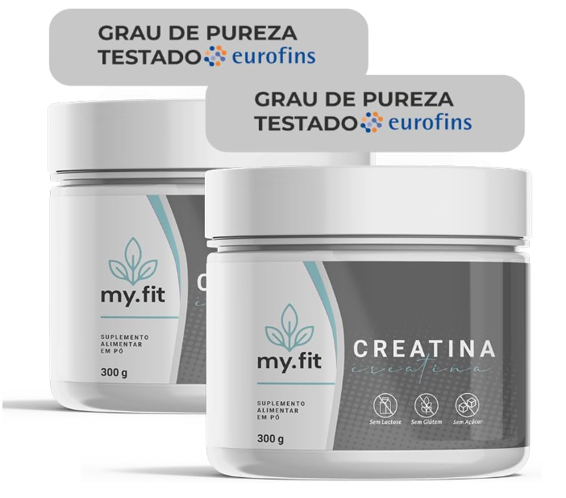
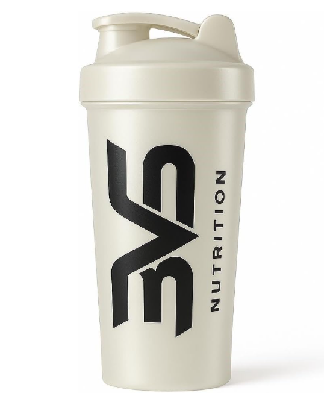

Let’s Gym Talk
Academia, ciência e motivação
Academia, ciência e motivação
A creatina é um dos suplementos mais estudados no mundo e é amplamente utilizada por praticantes de musculação e esportes de alta intensidade. Seu principal benefício é aumentar força, desempenho e auxiliar no ganho de massa muscular.
A creatina é uma substância produzida naturalmente pelo corpo e também obtida por alimentos como carne vermelha e peixes. Ela é armazenada principalmente nos músculos, onde ajuda a gerar energia rápida durante exercícios intensos.
A creatina melhora a produção de ATP (energia muscular rápida), o que aumenta força e explosão. Isso permite treinar com mais intensidade e consequentemente estimular mais hipertrofia.
A dose mais usada e considerada segura é: 3g a 5g por dia, todos os dias.
Não importa muito o horário. O mais importante é manter consistência diária.
Não é obrigatório. A saturação (20g por dia por 5 a 7 dias) pode acelerar o efeito, mas tomar 3 a 5g por dia funciona muito bem, apenas demora algumas semanas a mais para atingir o máximo.
Em pessoas saudáveis, estudos mostram que a creatina é segura quando usada na dose recomendada. Porém, quem tem problemas renais deve consultar um médico antes.
Creatina pode aumentar o peso na balança por retenção de água dentro do músculo (intramuscular), mas isso não significa aumento de gordura corporal.
São suplementos diferentes. Whey é proteína (ajuda a bater meta de proteína diária). Creatina é desempenho/força. Muitas pessoas usam os dois.
A creatina é um suplemento altamente recomendado para quem quer melhorar força e hipertrofia. É segura, barata e eficaz, desde que usada corretamente.
⚠️ Este conteúdo é educativo e não substitui orientação médica ou nutricional.
Se você quiser, confira alguns produtos relacionados que podem ajudar no treino.

Produto indicado para força, hipertrofia e melhora de performance.
Qualidade: ⭐⭐⭐⭐⭐
Uso: 3g a 5g por dia.
Ver na Amazon
Ajuda a misturar creatina e whey de forma prática.
Qualidade: ⭐⭐⭐⭐☆
Uso: Misture com água e consuma.
Ver na Amazon